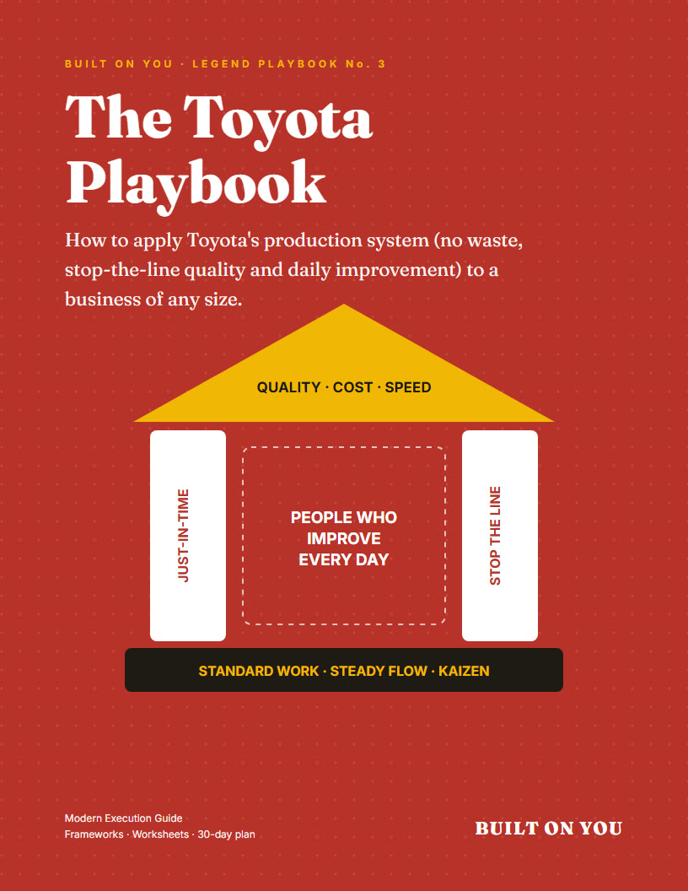
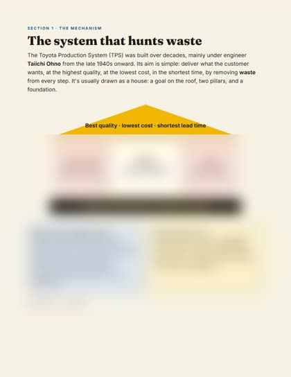
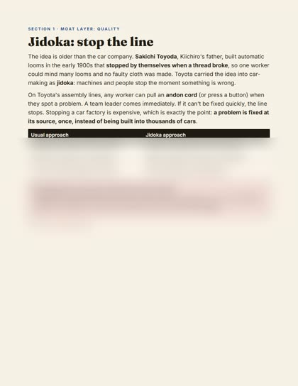
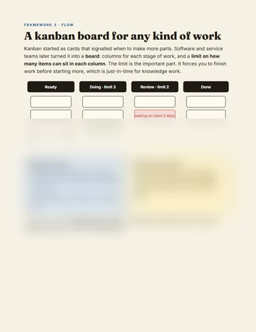
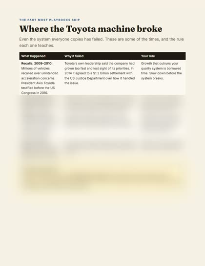
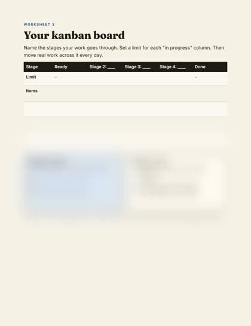

How to apply Toyota's production system (cut waste, stop problems at the source, improve a little every day) to your online store, agency, startup or local business. No factory required.

The video tells the story. This playbook hands you the system underneath it, rebuilt for a business with a laptop and a small team, not an assembly line.
For decades, rival carmakers toured Toyota's factories, photographed everything and copied the tools. Most still couldn't match it. The tools were never the secret. The secret was a way of working: problems surfaced instead of hidden, waste hunted every day, and everyone improving the work a little at a time. That's what you'll learn, with worksheets to start the same week.
Flow, quality, people and partners: how each one works, drawn out step by step.
The 7 wastes, five whys, a kanban board for any work, your "stop the line" rule, standard work and the one-page A3.
Step-by-step for online stores, agencies, software startups and local businesses, each with a $0 version.
Waste audit, five whys, kanban board, A3 and kaizen log, as a printable PDF and files you can edit in Google Docs, Notion, Sheets or Excel.
Where Toyota's system broke (the recalls, the 2011 tsunami, NUMMI) and the rule each one teaches.
One small move a week, plus a self-score to see where you start and how far you've come.





Most playbooks give you a PDF and leave you to retype the templates. This one includes the worksheets as editable files in your download, so you can start using them in minutes:
Download, then upload to Google Drive or use Notion's Import. Step-by-step instructions are on the first page.
31 pages · 6 frameworks · 5 editable worksheets · 30-day plan · reading list
Want the story first? See the books behind the video.
No. The video tells Toyota's story. The playbook skips the story and gives you the system behind it (cutting waste, stopping problems at the source, daily improvement) plus worksheets and plays to apply it to your own business.
Yes. Section 3 translates every tool for online stores, agencies, software startups and local businesses, and each play has a version you can start for close to $0.
A 31-page PDF (US Letter), plus the five worksheets as an editable Word document (opens in Google Docs, Notion and Word) and three spreadsheet files for the kanban board, waste audit and kaizen log.
You'll land on a confirmation page, and your download links are emailed to you straight away. You can download again any time from your customer portal.
No. It's an independent educational guide by Built On You, based on published books and Toyota's public history.